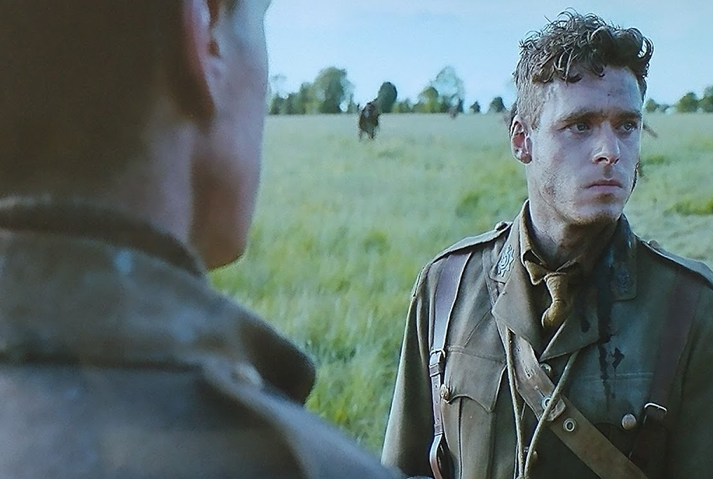
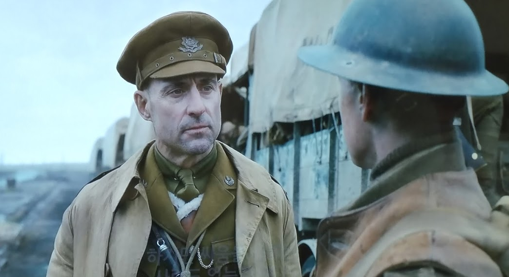
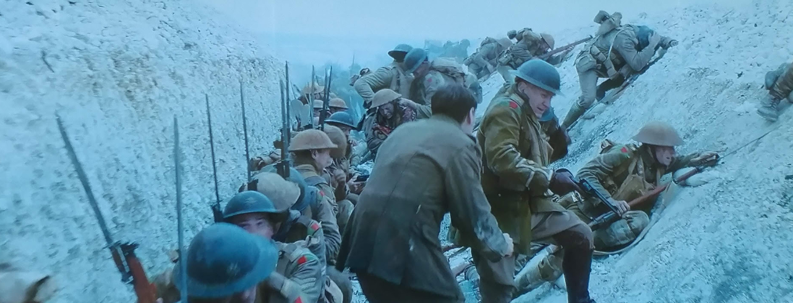
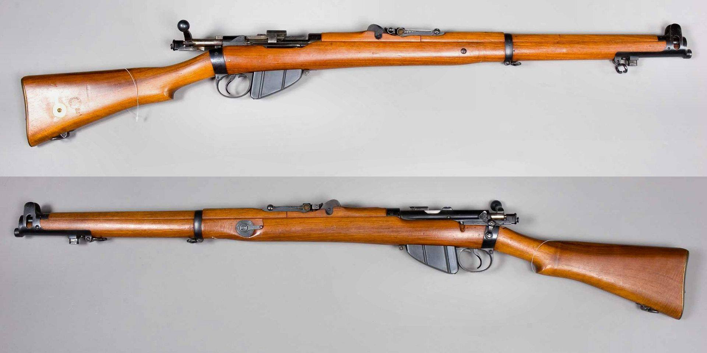
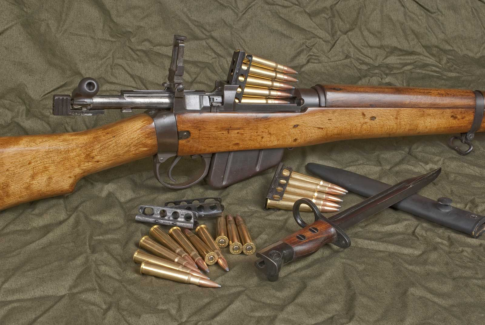
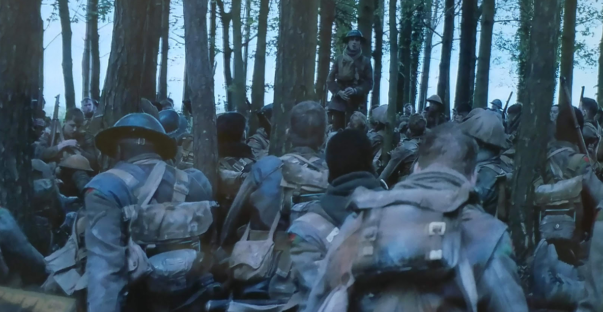

영화 1917의 인상적인 몇 장면 - A Wayfaring Stranger 가사 해설
게시: 2020-05-04T06:30:45+09:00
제1차 세계대전을 배경으로 한 이 영화에는 몇가지 소소하지만 인상적인 장면들이 있습니다.
** 주의 : 1917은 스포일러가 그닥 중요한 영화는 아니지만 아무튼 이 포스팅에는 스포일러에 해당하는 내용이 꽤 많이 들어 있습니다.
1. 왜 '루테넌트'가 아니라 '렙테넌트'인가 ?
미국 전쟁 영화에서는 중위(lieutenant)를 루테넌트라고 발음합니다. 그런데 영국군이 나오는 영국 영화 1917에서는 자세히 들어보면 중위를 부를 때 '렙테넌트(leftenant)'라고 발음하는 것을 들으실 수 있습니다. 영어가 원래 스펠링 따로 발음 따로 되는 단어들이 많은 단어이긴 합니다만, 군사 용어 중에 특히 그런 것이 많고, 그런 것들은 대부분 전통적 선진국 프랑스에서 수입된 단어입니다. 중위 내지는 부관이라는 뜻의 lieutenant 같은 단어도, 한눈에 딱 봐도 프랑스어 냄새가 폴폴 나는 단어입니다. 'in lieu of' (~ 대신에)라는 숙어에서 보듯이, lieu는 '장소' 라는 뜻이거든요. Tenant은 불어로 쥐고 있다 (tener의 현재진행형) 라는 뜻이라서, "captain이 자리를 비운 사이에 그 자리를 대신 하는" 정도의 뜻으로서 부관/중위를 뜻하는 lieutenant (루테넌트, 불어로는 류뜨낭)이라는 계급 이름이 생겨난 것입니다. 그런데 영국 해군과 미군에서는 모두 제대로 이걸 '루테넌트'라고 부르는데, 오직 영국 육군에서만 이걸 lieutenant라고 쓰고 leftenant (렙테넌트)라고 읽습니다. 아무리 봐도 lieutenant에는 f 비슷한 글자가 안 보이는데 왜 f 발음을 하는 것일까요 ? 여기에 대해서는 여러가지 썰이 있습니다. 영국 해군에서는 '육군 놈들이 무식한 바보들이라서' 그렇다고 하고, 영국 육군에서는 '그게 제대로 된 발음이니까' 라고 이유를 댑니다. 그런 편견이나 대책없는 우기기식 이유 말고 좀더 그럴싸한 이유로는 다음과 같은 것이 있습니다. 중세 노르망디 프랑스어에서는 lieu를 luef라고 썼다는 것입니다. 노르망디에 살던 프랑스화된 바이킹들이 영국을 정복하면서 그 발음이 그대로 영국에 도입되었기 때문이라는 것이지요. 그럴싸 합니다. 좀더 다양한 썰들에 대해서는 URL을 읽어보십시요. https://www.theguardian.com/notesandqueries/query/0,5753,-19576,00.html 2. 감정을 드러내지 않는 (unemotional) 영국인들

스페인이나 이탈리아 등 지중해권 유럽인들은 우리나라 사람들처럼 슬플 때는 소리내어 우는 등 감정 표현을 풍부하게 하는 편입니다만, 북해 및 발트해에 붙은 영국, 스웨덴, 독일 등 북부 유럽 사람들은 감정 표현을 잘 안 하는 것으로 유명하지요. 영화 1917에서도 동생이 죽었다는 소식을 듣는 형의 감정 표현이 정말 영국인스럽게 절제된(?) 모습으로 잘 그려졌습니다. 슬픈 장면인데 눈물 한방울 없고, 대사도 그리 길지 않은 것이 정말 인상적이었습니다. 스코필드 : 블레이크 중위님 ? (Lieutenant Blake ?) 블레이크 : 응 ? 치료가 필요한가 ? (Yes ? Do you need medical assistance ?) 스코필드 : 아닙니다. 전 제8 연대에서 왔습니다. (No, sir. I am from the 8th.) 블레이크 : 대체 여기서 뭘 하는 건가 ? (What the hell are you doing here ?) 스코필드 : 메시지를 전달하러 여기에 파견되었습니... (I was sent here to deliver a message...) 블레이크 : 제8 연대라고 ? 내 동생을 알겠군. (The 8th ? You must know my brother.) 스코필드 : 그 친구와 함께 파견되었습니다. (I was sent with him.) 블레이크 : 톰이 여기 왔다고 ? 어디 있나 ? (Tom's here ? Where is he ?) (스코필드가 아무 말이 없자 그의 표정을 보고 블레이크는 동생의 운명을 짐작해냅니다.) 스코필드 : 긴 고통은 없었습니다. 유감입니다. (It was very quick. I'm sorry.) (스코필드가 반지 등의 동생의 작은 유품 몇가지를 주머니에서 꺼내에 전달합니다. 형은 그걸 받아들고 반쯤 넋이 나갑니다.) 블레이크 : 자네 이름은 뭔가 ? (What's your name ?) 스코필드 : 스코필드입니다. (Scofield, sir.) 블레이크 : (손에 쥔 동생의 유품을 멍하니 내려다 보고 있다가) 미안하네. 뭐라고 ? (Sorry, what ?) 스코필드 : 스코필드입니다. 윌리엄 스코필드입니다. 윌입니다. (It's Scofield, sir. William Scofield. Will.) 블레이크 : (스코필드에게 눈물이 고인 눈을 보이고 싶지 않아 다른 곳을 쳐다보며 한동안 말이 없다가) 배가 고프면 배식 텐트로 가보게. (When you need some food, get yourself to the mess tent.)
이 장면에서 저는 제가 가장 좋아하는 무협지인 김용 선생의 비호외전의 한 장면이 떠올랐습니다. 그 무협지 속의 주인공은 호비라는 청년이지만, 최고 고수는 금면불 묘인봉이라는 호비 부친의 원수이자 과묵한 진짜 영웅입니다. 어찌어찌 하다 호비는 다른 악당으로부터 독극물에 의한 암습을 받아 눈이 멀게 된 묘인봉을 도와 악당들을 제압하는데, 그 악당들은 묘인봉의 원수 전귀농이라는 사람에게 사주를 받은 것입니다. 악당들을 제압한 뒤, 묘인봉은 그들을 죽이지 않고 이렇게 말합니다.
"가서 전귀농에게 전하게."
그러나 묘인봉은 과묵한 사람인데다, 어차피 이런 비열한 암습까지 획책한 원수에게 '목을 씻고 기다려라, 이 비열함에 대해서는 꼭 보복하겠다' 따위의 고루한 경고를 보내는 것은 의미가 없다고 생각했나 봅니다.
"전할 말도 없군. 그냥 가게."
제게는 이 장면이 정말 멋있다고 느껴졌습니다. 특히 저처럼 말이 많은 사람에게는 더욱 그랬습니다.
3. 미친 놈들은 어디에나 있다

톰 크루즈 주연의 'Jack Reacher' 라는 영화에서 톰 크루즈가 '직업 군인에는 4가지 종류의 사람이 있다' 라면서 이렇게 말하는 장면이 나옵니다. "어떤 사람들에게는 군인이란 그냥 집안 대대의 직업이에요. (For some, it's a family trade.) 어떤 사람들은 국가에 봉사하려는 애국자들이고요. (Others are patriots, eager to serve.) 그 다음으로는 그냥 직업이 필요한 사람들이 있습니다. (Next, you have those who just need a job.) 그리고 합법적으로 사람을 죽이고 싶어하는 사람들이 있지요. (Then there's the kind who want a legal means of killing other people.)" 꼭 그런 건 아니더라도, 사회에는 별의별 사람이 다 있고 전쟁터에도 마찬가지입니다. 그런 부분을 암시하는 장면이 나옵니다. (혼자 위험한 임무를 떠나는 스코필드를 배웅하던 어느 대위가 마지막 순간에 돌아서서 조언을 덧붙입니다.) 대위 : 상병. 맥켄지 대령에게 어떻게든 도달하면, 반드시 증인들이 있는 장소에서 명령서를 전달하게. (Corporal, when you manage to get to Colonel MacKenzie, make sure there are witnesses.) 스코필드 : (그 말이 암시하는 바에 놀라서) 이건 직속 명령서입니다, 대위님 ! (They're direct orders, sir!) 대위 : 나도 알아. 하지만 어떤 사람들은 그저 싸움만을 원한다네. (I know, but some men just want the fight.) 4. 급할 수록 정확한 의사소통

헤밍웨이의 '누구를 위하여 종은 울리나'에서도 나옵니다만, 자신들이 함정 속으로 들어가게 되어 있어서 공격하면 진다는 것을 안다고 해도, 이미 공격이 시작된 시점에서는 공격을 멈추는 것이 사실상 불가능한 경우가 많습니다. 공격을 멈추지 않으려는 지휘관에게 1초라도 빨리 공격 중지 명령을 전달하려는 졸병이 어떻게 말을 해야 하겠습니까 ? 이 영화에서 스코필드 상병의 대사는 정말 모범적인 답안이라고 할 수 있습니다. 이미 공격이 시작되어 제1파가 돌격을 시작한 다급한 상황에서 저렇게 또박또박 필요한 말을 전달하는 것은 생각보다 쉽지 않습니다. 스코필드 : (명령서를 쥔 손을 내밀며) 맥켄지 대령님 ! 이 공격은 중단되어야 합니다 ! 중지 명령이 내려왔습니다. 멈추셔야 합니다. (Colonel MacKenzie! This attack is not to go ahead! You have been ordered to stop. You have to stop! )
맥켄지 : 넌 뭐야 ? (Who the hell are you?)
스코필드: (경례를 하며) 제8 연대 스코필드 상병입니다. 이 공격을 취소하라는 에린모어 장군님의 명령을 가지고 왔습니다. (Lance Corporal Scofield, sir. 8th. I have orders from General Erinmore to call off this attack.)
맥켄지 : (더 듣지도 않고 돌아서며) 너무 늦게 왔네, 상병. (You’re too late, Lance Corporal.)
스코필드 : 대령님, 이 명령서는 군 사령부에서 온 것입니다. 이걸 읽으셔야 합니다. (Sir, these orders are from Army Command. You have to read them.)
소령 : 제2차 공격을 중단할까요 ? (Shall we hold back the second wave, sir?)
맥켄지 : 아니, 소령. 머뭇거리면 진다. 승리가 바로 500야드 거리에 있어. (No, Major. Hesitate now and we lose. Victory is only five hundred yards away.)
스코필드 : 대령님, 이 편지를 읽으셔야 합니다. (Sir, please read the letter!)
맥켄지 : 그런 거 전에도 읽었네. 난 해질녘이나 안개를 기다리지 않을 거야. 부하들을 도로 불러들였다가 내일 다시 돌격시키는 짓은 하지 않겠어. 적군이 후퇴하는 중에는 그러면 안돼. 이게 저것들의 최후의 저항이야. (I have heard it all before. I’m not going to wait until dusk, or for fog. I’m not calling back my men, only to send them out there again tomorrow. Not when we’ve got the bastards on the run. This is their last stand.)
스코필드 : 이건 독일군이 의도한 겁니다. 독일군은 이걸 몇 달째 계획했습니다. 적군은 대령님이 공격하길 원합니다. 편지를 읽으셔야 합니다. (The German’s planned this, sir. They’ve been planning it for months. They want you to attack. Read the letter.)
5. 대체 'the 8th'라는 것은 제8 연대인가 제8 대대인가 ?
결론부터 이야기하면 제8 연대입니다. 원래 전통적으로 유럽에서 기본적인 독립 전투 단위는 연대가 아니라 대대(battalion)입니다. 그런데 나폴레옹 시대 영국군의 경우는 연대(regiment)와 대대가 별 구분 없이 혼용되는 경우가 종종 있었습니다. 당시 연대는 2개 대대로 구성되는 경우가 많았는데, 1st battalion은 전장에 투입되고, 2nd battalion은 영국 본토의 원래 기지(depot)에서 새로 신병들을 모집해서 훈련시킨 뒤 보충병을 전장의 1st battalion에 보내는 역할을 했기 때문입니다. 그래서 전장에서 만난 같은 영국군끼리 서로 소속을 물을 때 the 8th라고 하면 더 설명할 필요도 없이 '제8 연대 소속 제1 대대'를 뜻하는 것이었습니다. 이런 전통은 이후로도 계속 이어져서 그냥 별 설명없이 the 8th라고 하면 제8 연대를 가리키는 것이 되었습니다.
이 영화 속에서는 좀더 명확합니다. 영화 초반 에린모어(Erinmore, 콜린 퍼쓰) 장군이 임무를 설명하는 장면에서 이런 대사가 나오거든요. 그러니까 저기서 말하는 2nd니 8th니 하는 것들은 모두 연대의 부대 번호입니다.
에린모어 : 자네에게 내리는 명령은 에쿠스트 마을 남동쪽 1마일 지점의 크롸지유 숲에 있는 제2 연대에 가라는 것이네. 이걸 맥켄지 대령에게 전달해. 이건 내일 아침의 공격을 취소하라는 명령일세. 만약 자네가 실패하면 학살이 일어날 거야. 우린 2개 대대를 잃겠지. 자네 형을 포함한 1600명의 목숨이 걸린 일일세. 시간 내에 거기 갈 수 있겠나 ? (Your orders are to get to the 2nd at Croisilles Wood, one mile south east of the town of Ecoust. General Erinmore: Deliver this to Colonel MacKenzie. It is a direct order to call off tomorrow morning’s attack. If you don’t, it will be a massacre. We will lose two battalions. Sixteen hundred men, your brother among them. You think you can get there in time?)
6. 영국군은 속사수
영화 중반 경에 주인공 스코필드가 독일군과 총격전을 벌이는 장면이 나오는데, 당시 소총은 한발 쏘고나서는 손으로 장전 손잡이를 당기고 밀어야 하는 볼트액션(bolt-action)식이었기 때문에 장전에 시간이 걸렸습니다. 그런데 이 영화 속에서 스코필드는 너무나 쉽고 빠르게 재장전을 합니다. 그게 하도 인상적이라서 찾아보니, 당시 영국군 표준 소총인 Pattern 1914 Enfield의 사격 속도는 정말 "20–30 aimed shots per minute"이었습니다. 최대 사격 속도도 아니고 조준해서 쏘는데도 분당 20~30발... 엄청난 속도입니다. 이에 비해 독일군의 표준 소총이었던 Gewehr 98은 분당 15발에 불과했습니다. 키건 경(Sir John Keegan)의 제1차 세계대전사 중에 보면 벨기에 지방에서 영국군 소총부대의 사격을 받은 독일군이 '기관총 공격을 받고 있다'라고 보고했다는 이야기가 나오는데, (과장이 섞였겠지만) 그럴 만도 합니다.

하긴 영국군은 플린트락(flintlock) 머스켓 소총을 쓰던 나폴레옹 전쟁 당시부터 유럽의 다른 군대에 비해 속사로 유명했습니다. 이렇게 속사를 중시하는 전통 덕분에, 당시 소총치고는 특이하게 외부 탄창까지 장착하여 10발까지 연사가 가능했습니다. 그러나 정작 탄약은 5발짜리 클립 형태로 보급되었기 때문에 꽉 채워 장전하려면 2번 장전해야 했습니다. 그리고 실제로 10발을 꽉 채우면 스프링 등의 문제로 탄피 걸림 (jam) 문제가 발생하는 경우가 잦았기 때문에 실제로는 5발만 장전하는 경우가 많았습니다. 영화 속에서도 스코필드는 그냥 5발짜리 클립을 1개만, 즉 5발만 장전합니다.

다만 영국군은 속사만 중요시했고 정확성은 그다지 중요하게 생각하지 않았는지, 나폴레옹 시절에도 프랑스군은 영국군의 속사 실력에는 혀를 내두르면서도 '정확성은 그닥 뭐 별로...' 라고 평가했습니다. 영화 속에서도 주인공 스코필드는 뭐든 1발에 명중시키지 못합니다. 심지어 3m 거리에 앉아 있는 표적조차도...
5발짜리 클립으로 엔필드 소총을 재장전하는 모습은 아래 유튜브 영상을 참조하세요.

7. A Wayfaring Stranger


1917에서 제일 마음에 들었던 장면이 숲 속에 병사들이 둘러앉아 동료 병사가 부르는 A Wayfaring Stranger를 듣는 장면입니다. 문학의 핵심은 재미난 스토리입니다. 작가란 단순한 writer라기보다는 storyteller여야 한다고 믿는데, 그런 점에서 진짜 stroyteller는 일반 사람들이 잘 상상하지 못하는 뜻 밖의 전개를 상상해낼 수 있어야 한다고 생각합니다. 죽다 살아나서 최전선에 간신히 도착했을 때, 포탄이 터지는 격전장이 아니라 고요한 숲 속에서 병사들이 그런 구슬픈 민요를 듣고 있는 장면을 생각해내는 것이 진짜 재주입니다. 그런 점에서 1917을 제치고 '기생충'이 아카데미 득템한 것은 당연한 결과라고 봅니다. '기생충'에서 그런 이야기 전개는 정말 예상 밖이었거든요. 영국 영화인 1917에서 영국군 병사가 부르기 때문에 영국 민요라고 생각하기 쉽지만 이건 18세기 경에 나온 미국 민요입니다. 남북전쟁 당시 처참한 포로수용소에서 죽어가던 북군 포로가 이미 불구가 된 친구를 오히려 위로하며 지은 노래라는 썰도 있지만 실은 그 이전부터 있던 노래입니다. 노래 가사는 정말 글자 그대로 '요단강 건너는' 내용입니다. 곧 죽으러 가는 병사들에게 이 노래를 들려주는 것이 과연 적절한지 모르겠습니다만, 노래 가사는 정말 딱 상황에 맞네요. 영화 속 삽입곡은 아래에서 감상하세요. https://youtu.be/xK7n_oI6m2w I am a poor wayfaring stranger I'm travellin' through this world of woe Yet there's no sickness, toil, nor danger In that bright land to which I go 난 가련한 떠돌이 나그네 고난의 세상을 헤맨다네 하지만 질병도 고난도 위험도 없지 내가 가는 그 밝은 땅에는 말이야 I'm going there to see my Father I'm going there, no more to roam I'm only going over Jordan I'm only going over home 난 거기에서 아버지를 보게 될거야 거기에서는 더 이상의 방황이 없겠지 난 요단강을 건너는 것 뿐이야 난 그저 집으로 가는 것 뿐이야 I know dark clouds will gather 'round me I know my way is rough and steep But golden fields lie just before me Where God's redeemed shall ever sleep 먹구름이 내 주변으로 몰려들 것을 알아 내가 가는 길이 험하고 급하다는 것도 알지 하지만 황금빛 벌판이 바로 앞에 있어 신의 구원을 받은 자들이 영원히 잠드는 그 곳 I'm going home to see my mother And all my loved ones who've gone on I'm only going over Jordan I'm only going over home 난 집에서 어머니를 보게 될거야 먼저 간 사랑하는 이들도 난 요단강을 건너는 것 뿐이야 난 그저 집으로 가는 것 뿐이야